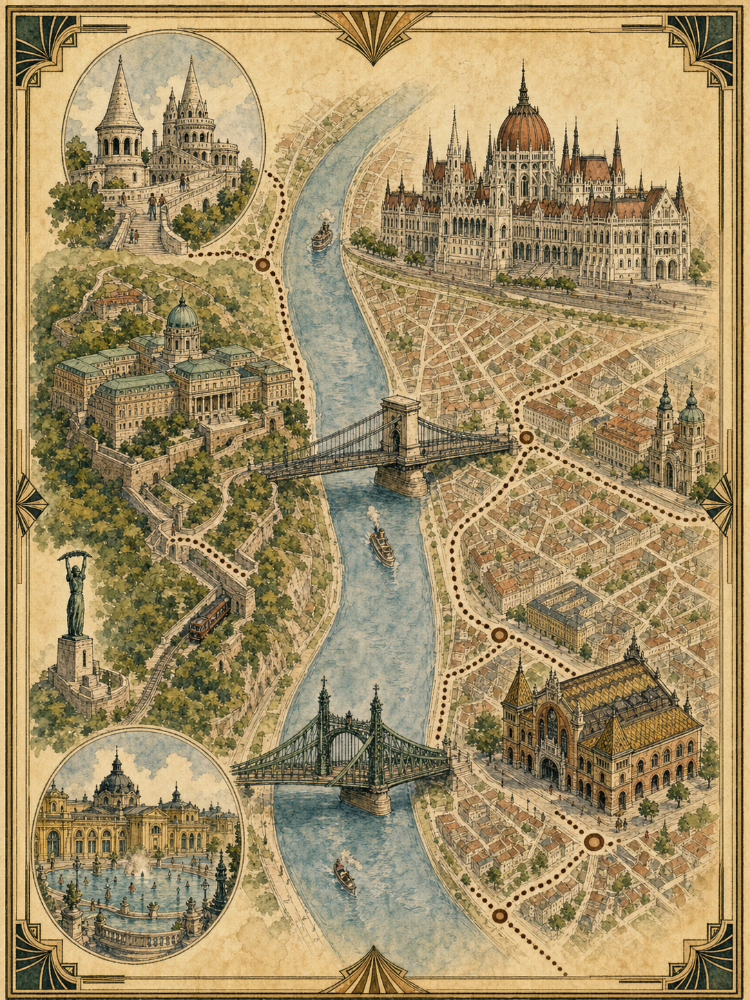

DAY 1 / 10.02 Fri / Budapest arrival
BUD机场到市区
- 08:00落地后, 100E机场快线到Deak Ferenc ter最省心, 常见耗时约35到45分钟。
- 100E需单独机场票, BKK当前机场快线单程票为2500 HUF。
- 市区行程可买Budapest 24h/72h票; 72h当前5750 HUF, 不替代100E机场票。
8天7晚, 从多瑙河夜景开始, 先顺路进维也纳, 再向西进入奥地利湖区, 经萨尔茨堡转往布拉格。核心原则是每天一条主线, 避开Hallstatt式商业拥挤, 把湖、山和小镇留给真正慢下来的两晚。

主线改为 Budapest - Vienna - Salzkammergut - Salzburg - Prague。布达佩斯保留2晚恢复和看多瑙河, 维也纳1晚作为顺路城市过渡, 湖区住2晚避开Hallstatt, 最后经萨尔茨堡去布拉格。
全部日期的出行方式、预算和购票入口都集中在这里。新版路线按 Budapest 2晚 - Vienna 1晚 - 奥地利湖区2晚 - Prague 2晚重排。跨城用铁路官网购票, 湖区用 OBB + OOVV/Salzburg Verkehr 查联程, 城市内用本地交通App。2026年10月精确班次和浮动票价仍以购票日页面为准。
这里用OpenStreetMap底图和Leaflet组件绘制每日city walk。点击城市和日期可以切换路线, 地图点位可打开弹窗, 也保留一键跳转Google Maps的路线入口。
抵达日不安排重博物馆, 让第一眼给圣伊什特万、国会大厦和多瑙河。第二天早上去中央市场, 下午过自由桥到盖勒特山脚和温泉。New York Cafe只作为可替换咖啡点, 不再占用第三天。
维也纳从“深玩两天”改成顺路高质量停留。上午从布达佩斯到站, 午后把Upper Belvedere、Karlskirche和内城咖啡馆串成一条, 第二天一早向西去湖区。
湖区不把Hallstatt放主线, 改走当地度假感更强的St. Gilgen、Fuschlsee、Wolfgangsee和Strobl。住宿建议放在St. Gilgen或Fuschl, 交通接Salzburg 150路巴士顺, 也更接近你们想要的人少、自然、湖边慢行。
从湖区经Salzburg转到布拉格, 抵达日只走老城和查理大桥, 不进太多馆。第二天清晨上桥, 上午进城堡区, 下午根据天气选约瑟夫城、国家博物馆或Letna夕阳。
这里单独整理视频里明确出现、评论补充、社媒高频推荐或与路线高度重合的餐厅咖啡馆。客单价是按公开菜单和常见点单方式估算的旅行预算, 正式下单前以店内菜单为准。
| 店名 | 城市 | 来源线索 | 推荐理由 | 客单价 | 必吃或必点 | 适合放哪天 |
|---|---|---|---|---|---|---|
| Central Market Rétes Stall | 布达佩斯 | 欧洲_Miaomiao中央市场详解 | 创作者细到摊位号的市场严选, 适合早上边逛边吃。 | €4到8 | túró奶酪卷, 酸樱桃罂粟籽卷, 李子卷 | D2 08:00市场线 |
| Fakanal Etterem | 布达佩斯 | 原来是西门大嫂中央市场段 | 中央市场二层顺路, 不需要为餐厅单独绕路。 | €12到22 | goulash, chicken paprikash, Hungarian stew | D2午餐备选 |
| New York Cafe | 布达佩斯 | 多支vlog与New York Palace住宿线 | 复古建筑氛围强, 更适合拍照和甜品咖啡, 不建议执着正餐。 | €25到45 | hot chocolate, Dobos cake, espresso drinks | D1或D2替换咖啡点 |
| For Sale Pub | 布达佩斯 | 原来是西门大嫂vlog提及 | 市场和自由桥附近, 装饰感强, 适合旅行感晚餐。 | €18到32 | goulash soup, beef stew, paprika dishes | D2晚餐备选 |
| Cafe Central | 维也纳 | TARO维也纳vlog提及 | 维也纳咖啡馆经典样本, 建筑和甜点都适合手札画面。 | €20到35 | Wiener melange, apple strudel, Kaiserschmarrn | D3晚间或次日早场 |
| Cafe Demel | 维也纳 | TARO维也纳vlog提及 | 比正餐更适合甜点停靠, 与霍夫堡线高度顺路。 | €18到35 | Sachertorte, Anna Demel torte, hot chocolate | D3内城甜点停靠 |
| Cafe Sperl | 维也纳 | Before Sunrise氛围线和旅拍vlog | 更文艺, 更像旧维也纳日常, 人流通常比头部咖啡馆温和。 | €15到28 | Sperl torte, melange, light lunch | D3傍晚 |
| Kleines Cafe | 维也纳 | Before Sunrise取景氛围 + 小红书/旅拍高频 | Franziskanerplatz小广场很有旧城生活感, 比大咖啡馆更适合city walk停顿。 | €12到25 | melange, open sandwich, house wine | D3晚间散步线 |
| Bitzinger Wurstelstand Albertina | 维也纳 | 维也纳街头小吃高频 | 歌剧院和Albertina旁, 不想排咖啡馆时用来补一顿快餐很顺。 | €8到15 | käsekrainer, bratwurst, potato salad | D3夜间备选 |
| Cafe Dallmann | St. Gilgen | Wolfgangsee湖区咖啡高频 | St. Gilgen老街和湖边路线中间, 适合把湖区下午压慢。 | €12到25 | homemade cakes, apfelstrudel, coffee | D4抵达后或D5下午 |
| Zauner Bad Ischl | Bad Ischl | 湖区雨天/皇室小镇路线高频 | 如果D5天气不适合上山, Bad Ischl + Zauner是很稳的室内甜点替代线。 | €15到30 | Zaunerstollen, cakes, hot chocolate | D5雨天备选 |
| Dorf Alm zu St. Wolfgang | St. Wolfgang | Wolfgangsee路线餐厅备选 | 靠近St. Wolfgang游船与小镇线, 适合D5不赶路时吃一顿湖区正餐。 | €20到38 | schnitzel, trout, seasonal Austrian dishes | D5午餐或晚餐 |
| Cafe Louvre | 布拉格 | 布拉格咖啡馆高频 + 城市文化线 | 老城和国家大街附近, 文学气质强, 适合抵达后的低强度晚餐或甜点。 | €12到28 | svíčková, cakes, hot chocolate | D6晚间或D7下午 |
| EMA Espresso Bar | 布拉格 | 旅拍vlog与咖啡路线高频 | 靠近老城东侧和火车站方向, 适合D6抵达或D7清晨补咖啡。 | €6到15 | flat white, batch brew, pastry | D6/D7咖啡 |
| Lokál Dlouhááá | 布拉格 | 布拉格本地餐厅路线重合 | 老城东侧顺路, 适合第一晚吃捷克菜和tank beer。 | €15到25 | tank beer, svíčková, fried cheese | D6晚餐 |
| U Kroka | 布拉格 | 布拉格本地菜高评价线 | 更适合和Vysehrad或河边散步搭配, 比老城核心餐厅更像认真吃一顿。 | €18到32 | duck leg, beef goulash, pork ribs | D7或D8早午餐 |
| Myšák | 布拉格 | 甜点咖啡社媒高频 | 新城一侧复古甜点店, 适合下雨或逛完博物馆后停一下。 | €8到18 | venecek, cakes, coffee | D7下午备选 |
| Kantyna | 布拉格 | 华生Going本地餐厅方向 | 肉类主题明确, 适合不想吃景区餐的晚餐。 | €20到40 | beef tartare, butcher's steak, grilled meat | D7晚餐 |
| Yami Sushi House | 布拉格 | 华生Going评论区校正 | 作为连续中欧菜后的换口味选择, 不放主线但保留备选。 | €20到35 | sushi set, salmon roll, warm miso soup | D6或D7备选 |
住宿先看B站视频中能确认的酒店, 再看Hyatt和路线候选。价格会随日期波动, 正式预订时再用10月2到9日分城查询。未公开酒店名的视频不强行猜。
只收视频画面、标题、简介或评论中可以确认名称的住宿。布拉格部分有视频出现酒店介绍但未公开酒店名, 暂不列入推荐。


这一组按路线便利、复古感和预算压力整理, 用来和B站住宿参考一起做最终预订比较。


这些点不作为“必须打卡”, 而是塞进对应city walk里的低成本补光点。原则是顺路、好拍、不会吃掉半天。
电影模块按“能不能和行程自然重合”筛选。The Grand Budapest Hotel只作为布达佩斯复古氛围参考, 不标成真实布达佩斯取景。

"Keep your hands off my lobby boy!"

"I like to feel his eyes on me."

"Nobody thinks in terms of human beings."

"Your mission, should you choose to accept it."

"Forgive me, Majesty. I am a vulgar man."

"The name's Bond. James Bond."